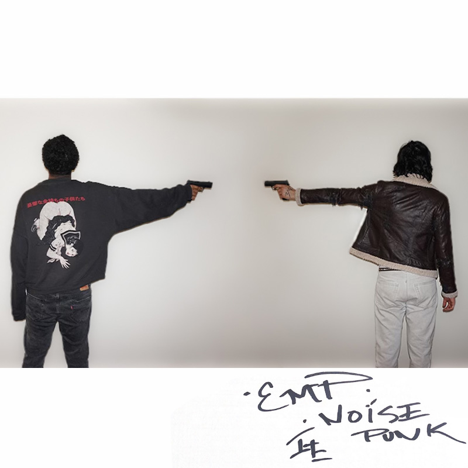

<main class="music-wrapper">
  <div style="width:100%; max-width:520px; margin-bottom:40px; text-align:center;">

    <div style="
      font-size:12px;
      letter-spacing:0.18em;
      text-transform:uppercase;
      opacity:.7;
      margin-bottom:12px;
    ">
      sins not tragedies (rmx)
    </div>

    <audio controls style="width:100%;">
      <source src="assets/audio/sinsnottragedies_rmx.mp3" type="audio/mpeg">
      Your browser does not support the audio element.
    </audio>

  </div>

  <div class="album-row">

    <!-- ANG3L -->
    <a class="album"
       href="https://soundcloud.com/prince-marco-278939286/ang3l"
       target="_blank" rel="noopener">
      
      <span>ANG3L</span>
    </a>

    <!-- EMP -->
    <a class="album"
       href="https://soundcloud.com/prince-marco-278939286/sets/emp"
       target="_blank" rel="noopener">
      
      <span>EMP</span>
    </a>

    <!-- TAPED -->
    <a class="album"
       href="https://soundcloud.com/marco-maria-638714703/sets/taped"
       target="_blank" rel="noopener">
      
      <span>TAPED</span>
    </a>

  </div>
</main>
